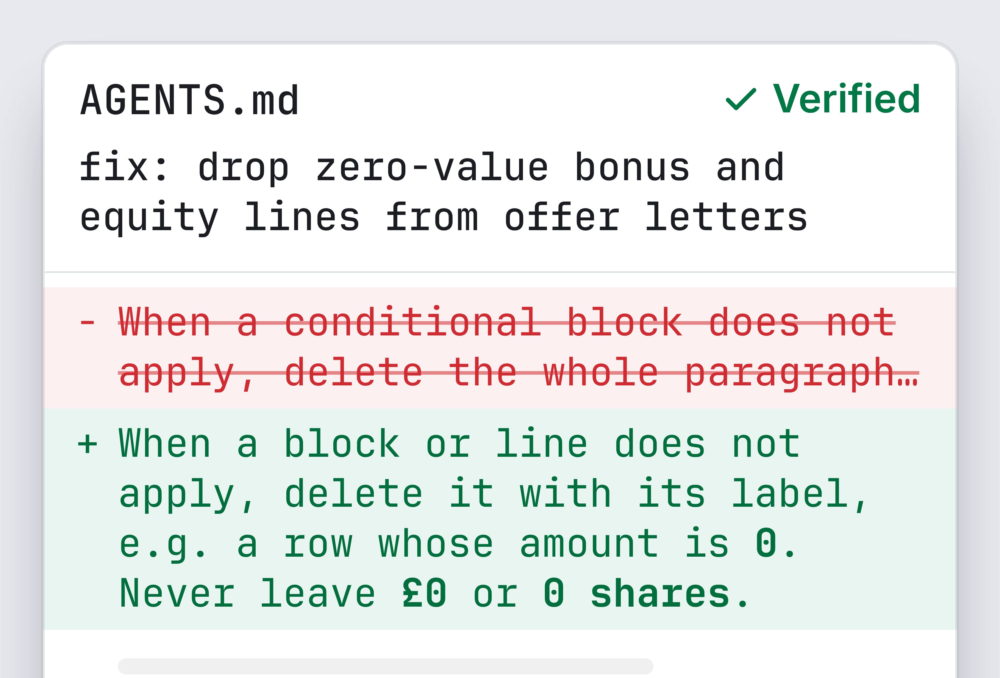

IEEE International Conference on Data Mining
<placeholder>
<placeholder>
Hone: Mining Agent Trajectories to Optimize AGENTS.md via Cross-Examination

Code
github.com/
AaLexUser/hone
Hone improves AGENTS.md from sessions that already happened.
No task is re-run.
AGENTS.md: the instruction file a coding agent loads into its system prompt at every session.
Highest task success of six systems on both benchmarks. Gain over the same Pi agent without Hone:
OfficeQA
SpreadsheetBench
+1.9 over SkillOpt
Table I. Task success, %, GPT-5.4-mini target model. Hone unoptimized agent skill optimizer. The Pi agent is Hone's starting configuration; only AGENTS.md differs.
Setup. Hone saw traces and text feedback (“Expected … Got …”), no task re-run; OfficeQA: 200 tasks in 5 batches of 40; final file scored once on the full benchmark.
Five optimizers need re-runs and pass/fail labels. Hone needs neither.
No task re-runs
Needs task re-runs
No pass/fail labels
Needs pass/fail labels
Trace2Skill · EvoSkill
Reviewers disagree, a judge cross-examines, a verifier gates every edit.
Reviewers mine patterns across sessions; a finding becomes an edit only if it holds up under cross-examination.
The judge re-queries the panel until disagreements are resolved.
Repeated complaints became rules. A one-off did not.
The demo DEMO SCENARIO · HR OFFER LETTERS (SCRIPTED)



Finding · demo session
Outcome
Dates written month-first
✓ became a rule
Manager copied from an old letter
✓ became a rule
“Family name first”, for one candidate
× refused: one-off
£0 and 0-share lines left in
✓ became a rule
Demo scenario (scripted), illustrative. cited session the user commented. No support threshold: the manager rule rests on one session.
Live demo
at this booth
Ask us to run it.